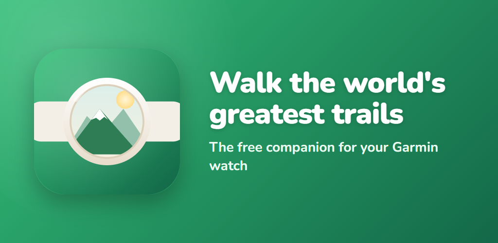

Beta access · GarminYou're in. Let's get you walking.
Two quick steps and your everyday steps start carrying you down the Inca Trail — it's free. Most people are walking in about five minutes.
Join the testers group
We add testers through a Google Group. Tap below, then on the page that opens click the "Join group" button near the top — that's the bit that signs you up. Use the same Google account as your phone's Play Store, and give it a few minutes to go live.
Join the testers groupAdd the Inca Trail
The Inca Trail is free and live now on the Connect IQ store. You'll need the free Garmin Connect app with your watch paired. Download it, then open Watch Walks once on your watch to start.
Get it on Connect IQGet the companion (optional)
The free phone app turns your steps into a living map, unlocks a story at every landmark, and gives you a badge for each trail — reading straight from your watch over Bluetooth.
Companion on Google PlayWant every detail? See the full Garmin setup guide.
We'll get you walking.
- "You're not a tester yet" or the app won't install — give it a little longer after joining the group, and make sure you're signed in with the same Google account you used to join.
- The trail didn't appear on my watch — open Garmin Connect and sync again; it installs on the next sync.
- Still stuck? Email watchwalksupport@gmail.com and we'll sort it out.